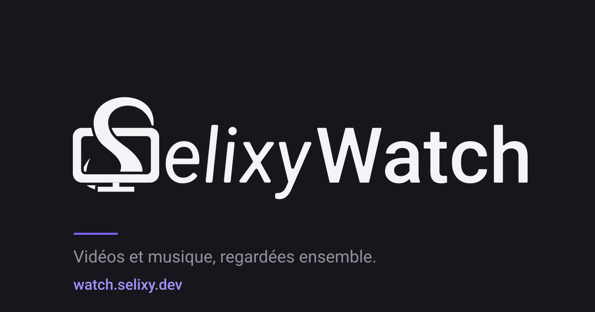
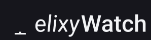

Tout ce qui est dessiné pour SelixyWatch : ce que le site utilise, les sources, et les essais. Les fichiers de ce dossier sont servis tels quels sous /visuels/. Quand tu en ajoutes un, ajoute-le ici et dans le README.md.
favicon.svgRepli et première image avant le script (js/marque/favicon.js) ; index.html.
favicon-coupe.svgRepli quand le dessin à la volée échoue (js/marque/favicon.js).
icone-180.pngapple-touch-icon dans index.html.
icone-192.pngManifeste (manifest.webmanifest) et icône de l’onglet en secours.
icone-512.pngManifeste ; écran de lancement des applications installées.

partage.pngog:image et twitter:image de index.html : l’aperçu quand on colle le lien.
preparation.svgSur l’image du lecteur tant que la vidéo n’est pas prête (js/lecteur/preparation.js).
logotype-sombre.svgSource pour les fonds sombres. Même dessin que js/marque/formes-texte.js.
logotype-clair.svgSource pour les fonds clairs.

animation-logotype.svgCadre, S qui s’écrit, pied, lame, lettres, fondu. Pas utilisée par le site pour l’instant.
essais/curseur.svgLe curseur descend cliquer sur la télé : la lame rouge apparaît (mute), un second clic la retire, il retourne sur le « i ».